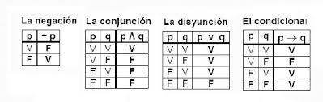
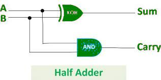
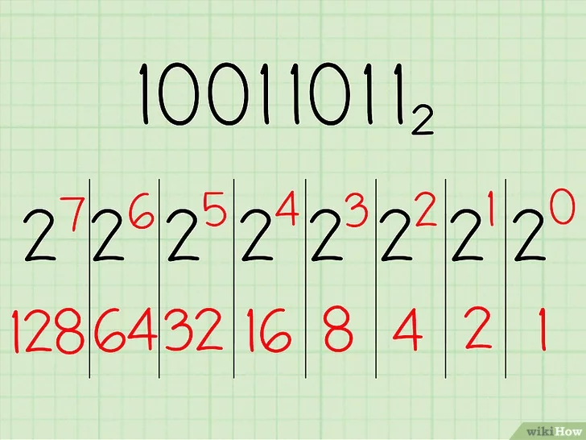
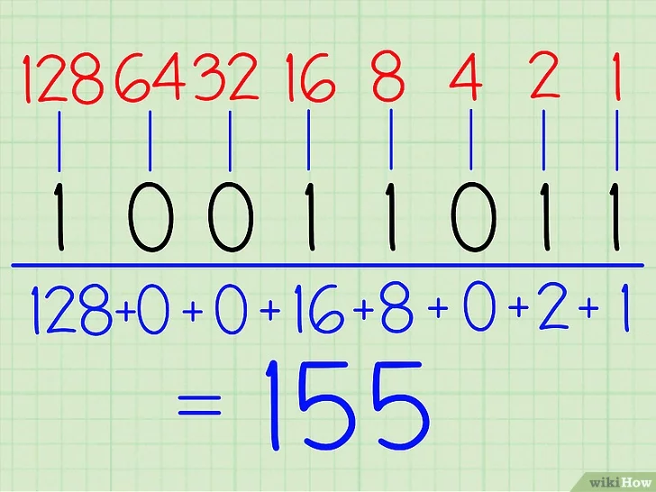
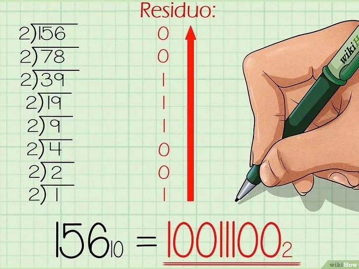

Computer Science o Informática
Computer Science o Informática es el estudio de las computadoras, incluida la teoría computacional, el diseño de hardware y software, los algoritmos y la forma en que los humanos interactúan con la tecnología.
Los científicos informáticos son solucionadores de problemas. Cuando un informático recibe un problema, recopila información y se comunica con computadoras utilizando lenguajes de programación y lógica. Crean un conjunto de reglas o instrucciones para que la computadora ejecute y resuelva el problema.
Principales áreas de estudio
Teoria Computacional
Aprendizaje y análisis de algoritmos. Un algoritmo es una sucesión de pasos ordenados que al repetirse de forma sistemática logra resolver un problema. Los algoritmos traen consigo el concepto de la complejidad. También incluye la teoría de grafos, criptografía, hardware y las estructuras de datos usadas para organizar los datos de forma eficiente para su posterior uso.
Aplicaciones
Inteligencia artificial, robótica, machine learning, procesamiento de imágenes, procesamiento de lenguaje natural, realidad aumentada, big data, hacking ético, entre otras.Ingeniería Computacional
Ingeniería de software, conocimiento y desarrollo de diversos lenguajes de programación, arquitectura de computadoras, compiladores de código.
Conceptos básicos de Computer Science
Circuitos Eléctricos
Para poder entender el funcionamiento de una computadora y sus orígenes, antes tenemos que conocer qué es y cómo funciona un circuito eléctrico. Un circuito eléctrico es una interconexión de componentes eléctricos que transporta corriente eléctrica a través de una trayectoria cerrada. Imaginemos una batería, ahora pensemos que dicha batería está conectada a través de cables a una lámpara, si deseamos prender la lámpara necesitamos que reciba corriente, Podemos tener un interruptor el cual, al cerrarlo prenda la lámpara.

Para poder prender la lámpara necesitamos cerrar tanto A como B. Esto se debe a que si cierro A pero no B, la energía de la batería logra llegar hasta el interruptor B, pero dado que el interruptor B está abierto, la energía se pierde y por lo tanto no llega al otro extremo derecho, no llega a la lámpara. Si A está abierto, pero B cerrado, la energía no llega al interruptor B, y por consiguiente, la lámpara no podría prenderse. En el caso de que tanto el interruptor A como el interruptor B estén cerrados, la energía logra fluir hasta llegar a la lámpara y lograr prenderla. Una alternativa, sería colocar dos interruptores de forma paralela de forma tal que si cierro uno, pero mantengo el otro abierto, la energía tiene un camino alternativo por donde pasar.

En este caso, si cierro el interruptor A pero mantengo el interruptor B abierto, la lámpara se prende igual. Esto se debe a que la energía de la batería pasa por el camino cerrado hasta alcanzar la lámpara. Análogo es el caso en el que el interruptor A está abierto y el interruptor B cerrado. Si buscamos asociar lo ya mencionado a lógica, podríamos considerar que cuando el interruptor está abierto su valor es 0 y cuando el interruptor está cerrado su valor es 1. Y la lámpara encendida es 1. Por lo tanto, en el primer caso, para poder prender la lámpara necesitamos que tanto el interruptor A como el interruptor B estén cerrados, es decir que ambos valores estén en 1. En el segundo caso, con que uno esté abierto ya es suficiente, por lo tanto podríamos tener A con un valor 0 y B con un valor 1 o viceversa, o ambos con valor 1. El uso de interruptores en serie (primer caso) representa un AND, y el uso de interruptores en paralelo (segundo caso) representa un OR. A partir de diversas combinaciones podremos lograr cada uno de los conectores lógicos.
Conectores Lógicos
Tablas de verdad para los conectores lógicos NOT, AND, OR, XOR
Half Adder
Combinando puertas lógicas podemos lograr diversas operaciones, como sumar números. Nosotros sumamos con números decimales pero las computadoras en su interior trabajan con un sistema binario de unos y ceros. Por ejemplo, si quisiéramos sumar 19+24 sabemos que la suma de 9+4 = 13, por lo tanto en el resultado final en la unidad nos queda un 3 y debemos “llevarnos” la decena. Luego, para la decena debemos sumar 1 + 2 + 1 = 4. Obteniendo como resultado final 43. En el Half Adder, ese rol de acarreo lo hace la puerta lógica AND mientras que el XOR efectúa la suma.

Sistemas de Numeración
Sistema Unario
Es el sistema de numeración más simple, posee un único símbolo para representar todos los números existentes. Si el símbolo elegido es “I”, el número 3 del sistema decimal sería: “III”. Su principal desventaja es que no nos permite simbolizar de forma cómoda y rápida un conjunto con muchos elementos.Números Romanos
En este caso existen 7 símbolos o signos para representar todos los números posibles. El orden de estos símbolos importa, se basa en un sistema aditivo, cada signo representa un valor que se va sumando al anterior. La numeración romana luego evolucionó a un sistema sustractivo, en el cual algunos signos en lugar de sumar, restan. Si el valor a la izquierda es menor, entonces resta.
Por ejemplo:
CXVII = cien + diez + cinco + uno + uno
MCMV = mil + (mil - cien) + cinco
Sistemas Posicionales
Un sistema posicional es aquel en donde cada dígito posee un valor que depende de su posición relativa, la cual está determinada por la base, número de dígitos necesarios para escribir cualquier número. En el caso de un sistema decimal, base 10, ya que el número de dígitos es 10, de 0 a 9. Por lo tanto, además del número de unidades que representa, considerado aisladamente, tiene un significado o peso distinto según la posición que ocupa en el grupo de caracteres del que forma parte.
De binario a decimal y viceversa
De binario a decimal usando notación posicional
1. Escribir el número binario y listar las potencias de 2 de derecha a izquierda

2. Escribir los dígitos del número binario debajo de sus potencias correspondientes.
3. Conectar los dígitos del número binario con sus potencias correspondientes.
4. Escribir el valor final de cada potencia de dos.
5. Sumar los valores finales.

De decimal a binario dividiendo por dos y usando el residuo
Dividir hasta que el resultado sea cero y escribir el número binario obtenido, empezando desde el último residuo hacia arriba hasta llegar al primero.

Lenguaje de Máquina
Las computadoras solo entienden ceros y unos. Nosotros No. Existen lenguajes de alto y bajo nivel que luego deben ser traducidos a lenguaje maquina, lenguaje interpretable por la computadora. La "traducción" se denomina compilación.